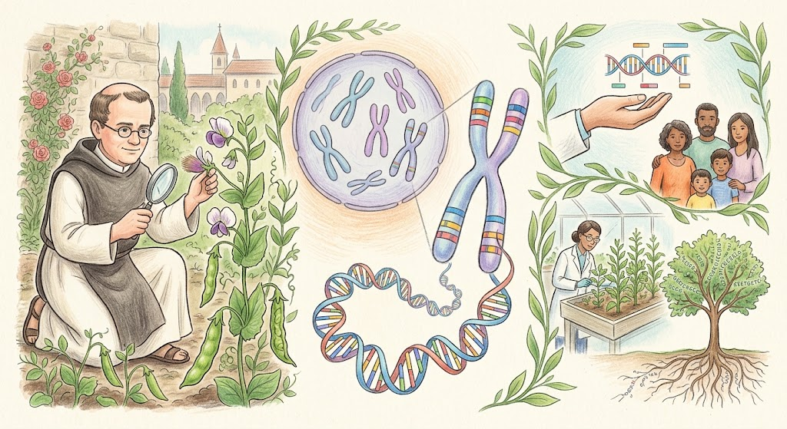

ความหมายและความสำคัญของพันธุศาสตร์
พันธุศาสตร์ (Genetics) เป็นสาขาหนึ่งของชีววิทยาที่ศึกษาเกี่ยวกับ การถ่ายทอดลักษณะทางพันธุกรรมจากรุ่นหนึ่งไปยังอีกรุ่นหนึ่ง รวมถึงศึกษาความแตกต่างของลักษณะที่เกิดขึ้นในสิ่งมีชีวิต และกลไกที่ทำให้สิ่งมีชีวิตแต่ละชนิดมีลักษณะเหมือนหรือแตกต่างกัน พันธุศาสตร์ช่วยอธิบายว่าทำไมลูกจึงมีลักษณะบางอย่างคล้ายพ่อแม่ เช่น สีตา สีผม หมู่เลือด หรือความสูง ขณะเดียวกันลูกก็อาจมีลักษณะที่แตกต่างจากพ่อแม่ได้เช่นกัน
การถ่ายทอดลักษณะทางพันธุกรรมเกิดขึ้นผ่าน สารพันธุกรรม ที่อยู่ภายในเซลล์ โดยมี DNA เป็นสารสำคัญที่เก็บข้อมูลทางพันธุกรรม ข้อมูลเหล่านี้ถูกส่งต่อจากพ่อแม่ไปยังลูกผ่านเซลล์สืบพันธุ์ ทำให้สิ่งมีชีวิตรุ่นใหม่ได้รับข้อมูลทางพันธุกรรมจากทั้งพ่อและแม่
ความรู้ทางพันธุศาสตร์มีความสำคัญอย่างมากต่อมนุษย์ เพราะสามารถนำไปใช้ในหลายด้าน เช่น การแพทย์ ใช้ศึกษาสาเหตุและความเสี่ยงของโรคทางพันธุกรรม การเกษตร ใช้ปรับปรุงพันธุ์พืชและสัตว์ให้มีลักษณะที่ต้องการ นิติวิทยาศาสตร์ ใช้ตรวจสอบ DNA เพื่อระบุตัวบุคคลหรือความสัมพันธ์ทางสายเลือด และ การอนุรักษ์สิ่งมีชีวิต ใช้ศึกษาความหลากหลายทางพันธุกรรมเพื่อช่วยรักษาประชากรของสิ่งมีชีวิตที่มีจำนวนลดลง